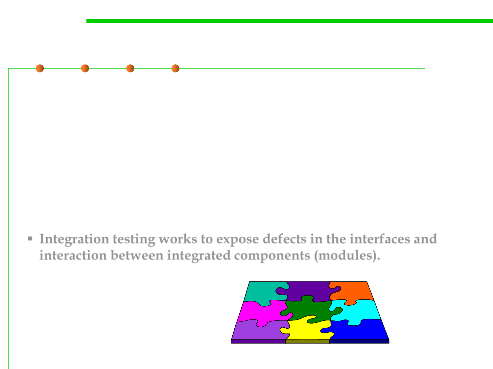

Integration Testing
7.5 Testing and Test-First Programming
▪ Integration testing is a type of software testing that seeks to verify
the interfaces between components against a software design.
Software components may be integrated in an iterative way or all.
▪ Integration testing is a systematic technique for constructing the
software architecture while at the same time conducting tests to
uncover errors associated with interfacing. The objective is to take
unit-tested components and build a program structure that has been
dictated by design.
▪ Integration testing works to expose defects in the interfaces and
interaction between integrated components (modules).